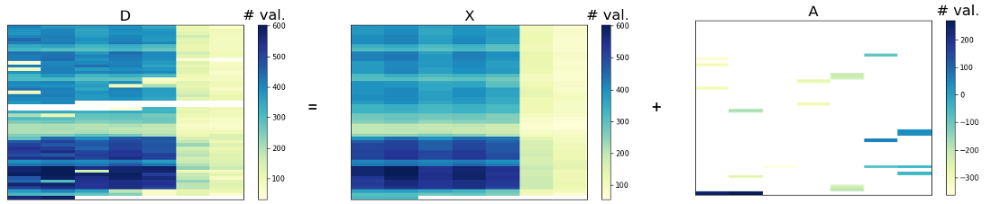

Focus on RPCA¶
Robust Principal Component Analysis (RPCA) is a modification of the statistical procedure of principal component analysis (PCA) which allows to work with grossly corrupted observations.
Suppose we are given a large data matrix \(\mathbf{D}\), and know that it may be decomposed as
where \(\mathbf{X}^*\) has low-rank and \(\mathbf{A}^*\) is sparse.
We do not know the low-dimensional column and row space of \(\mathbf{X}^*\), not even their dimension. Similarly, for the non-zero entries of \(\mathbf{A}^*\), we do not know their location, magnitude or even their number. Are the low-rank and sparse parts possible to recover both accurately and efficiently?
Of course, for the separation problem to make sense, the low-rank part cannot be sparse and analogously, the sparse part cannot be low-rank. See here for more details.
Formally, the problem is expressed as
Unfortunately this optimization problem is a NP-hard problem due to its nonconvexity and discontinuity. So then, a widely used solving scheme is replacing rank(\(\mathbf{X}\)) by its convex envelope —the nuclear norm \(\Vert \mathbf{X} \Vert_*\)— and the \(\ell_0\) penalty is replaced with the \(\ell_1\)-norm, which is good at modeling the sparse noise and has high efficient solution. Therefore, the problem becomes
Theoretically, this is guaranteed to work even if the rank of \(\mathbf{X}^*\) grows almost linearly in the dimension of the matrix, and the errors in \(\mathbf{A}^*\) are up to a constant fraction of all entries. Algorithmically, the above problem can be solved by efficient and scalable algorithms, at a cost not so much higher than the classical PCA. Empirically, a number of simulations and experiments suggest this works under surprisingly broad conditions for many types of real data.
Some examples of real-life applications are background modelling from video surveillance, face recognition, speech recognition. We here focus on anomaly detection in time series.
Some algorithms are implemented:
PcpRPCAclass (see p.29 of this paper). The optimisation problem is the following
GraphRPCAclass (based on this paper). The optimisation problem is the following
The idea is to adapt basic RPCA to time series by adding a constraint to maintain consistency between the columns of the low-rank matrix. By defining \(\Vert \mathbf{XH_k} \Vert_p\) is either \(\Vert \mathbf{XH_k} \Vert_1\) or \(\Vert \mathbf{XH_k} \Vert_F^2\), the optimisation problem is the following
OnlineTemporalRPCAclass. This class implements the online version of the above problem using stochastic optimisation (based on this paper and this paper). This allows to deal with large ammount of data or data that arrives continuously and does not assume a stable subspace.
The operator \(P_{\Omega}\) is the projection operator such that \(P_{\Omega}(\mathbf{M})\) is the projection of \(\mathbf{M}\) on the set of observed data \(\Omega\). This allows to deal with missing values. Each of these classes is adapted to take as input either a time series or a matrix directly. If a time series is passed, a pre-processing is done, as illustrated below: (a) take a time series with some seasonnalities (shaded blue area for daily seasonnalities and red vertical lines for weekly seasonnalities); (b) compute the autocorrelation function and keep the lag that gives the highest autocorrelation value. This lag is a good indicator for the dimension of the matrix on which a RPCA algorithm will be apply; (c) reshape the initial time series into a matrix of appropriate dimensions.

Until now, we only consider a univariate time series, which requires a resizing. But RPCA can also be applied on mutlivariate time series where each time series represents a column/row of the matrix. In this way, RPCA can be applied both univariate and multivariate time series.
References¶
[1] Candès, Emmanuel J., et al. “Robust principal component analysis?.” Journal of the ACM (JACM) 58.3 (2011): 1-37, (pdf)
[2] Wang, Xuehui, et al. “An improved robust principal component analysis model for anomalies detection of subway passenger flow.” Journal of advanced transportation 2018 (2018). (pdf)
[3] Chen, Yuxin, et al. “Bridging convex and nonconvex optimization in robust PCA: Noise, outliers, and missing data.” arXiv preprint arXiv:2001.05484 (2020), (pdf)
[4] Shahid, Nauman, et al. “Fast robust PCA on graphs.” IEEE Journal of Selected Topics in Signal Processing 10.4 (2016): 740-756. (pdf)
[5] Jiashi Feng, et al. “Online robust pca via stochastic opti- mization.“ Advances in neural information processing systems, 26, 2013. (pdf)